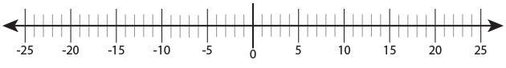

(មេរៀនទី៣)
ចុចលើព្រួញចុះក្រោមស្ដាំដៃដើម្បីបន្ត
ដើម្បីអាចឱ្យប្រមាណវិធីដកកើតឡើងនៅគ្រប់ករណី គេបានបង្កើតចំនួនគត់ ដែលមានសញ្ញាដកនៅពីមុខ ហៅថាចំនួនគត់រ៉ឺឡាទីអវិជ្ជមាន ដែលអាចឱ្យយើងបង្ហាញពីចំនួន មានតម្លៃតិចជាងសូន្យ។
ឧទាហរណ៍៖ $7-8=-1, 7-9=-2, 7-10=-3$
ឧទាហរណ៍៖ បើសិនជាសីតុណ្ហភាពធ្លាក់ចុះ $10 °C$ ក្រោម $0°C$ មានន័យថាវាមានតម្លៃតិចជាង $0$។ ដូច្នេះយើងអាននិយាយបានថា សីតុណ្ហភាពគឺ $-10 °C$។
បន្ទាត់ចំនួន ជាបន្ទាត់មួយដែលមានទិសដៅ ហើយនៅលើបន្ទាត់នេះ គេបានក្រិតយកឯកតាស្មើៗគ្នា។ បើសិនជាយើងបន្តរាប់លេងទៅខាងស្ដាំ តម្លៃនៃលេខនឹងកាន់តែធំ។ ក៏ប៉ុន្ដែបើសិនជាយើងរាប់ទៅខាងឆ្វេង តម្លៃនៃលេខនឹងកាន់តែតូច។ ដូច្នេះគ្រប់ចំនួននៅខាងស្ដាំ មានតម្លៃធំជាងចំនួននៅខាងឆ្វេង។
និយមន័យ : ចំនួនគត់រ៉ឺឡាទីប គឺជាសំណុំចំនួនអវិជ្ជមាន និងចំនួនគត់។ ចំនួន … -3, -2, -1, 0, 1, 2, 3 … ជាចំនួនគត់រ៉ឺឡាទីប ដែល 1, 2, 3 ជាចំនួនគត់វិជ្ជមាន និង -3, -2, -1 ជាចំនួនគត់អវិជ្ជមាន។ ចំណែក 0 មិនមែនជាចំនួនវិជ្ជមាន ឬអវិជ្ជមាន។
ចំណាំ ៖ យើងសង្កេតឃើញថាចំនួនអវិជ្ជមាន មានសញ្ញាដក(-) នៅពីខាងមុខ ហើយគេអាចសរសេចំនួនវិជ្ជមានដោយមាន ឬគ្មានសញ្ញាបូក(+) នៅពីមុខក៏បានដែរ។
ការប្រើប្រាស់ចំនួនគត់រ៉ឺឡាទីប៖
ឧទាហរណ៍៖ ហាងប្ដូរប្រាក់មួយ បានប្រើចំនួនគត់រ៉ឺឡាទីបដើម្បីបង្ហាញពីតុល្យភាពនៃប្រាក់ខាត និងប្រាក់ចំណេញគិតជាម៉ឺនរៀលក្នុងមួយថ្ងៃ។